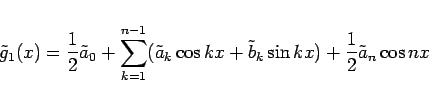

Inhalt Index DeskTop Bronstein

 Numerische Mathematik Approximation, Ausgleichsrechnung, Harmonische Analyse Harmonische Analyse Formeln zur trigonometrischen Interpolation
Numerische Mathematik Approximation, Ausgleichsrechnung, Harmonische Analyse Harmonische Analyse Formeln zur trigonometrischen Interpolation


Einige spezielle trigonometrische Polynome, die mit den Näherungskoeffizienten und gebildet werden, haben wichtige Approximationseigenschaften. Zwei davon sind:
|  | (19.211) |
mit den Koeffizienten (19.210) erfüllt an den Stützstellen  (19.209) die Interpolationsbedingung
(19.209) die Interpolationsbedingung
| (19.212) |
Infolge der Periodizität von f(x) ist  .
.
| (19.213) |
mit m < n und den Koeffizienten (19.210) approximiert die Funktion f(x) im diskreten quadratischen Mittel bezüglich der N Stützstellen  (19.209), d.h., die Fehlerquadratsumme
(19.209), d.h., die Fehlerquadratsumme
Die Formeln (19.210) bilden den Ausgangspunkt für verschiedene Verfahren zur effektiven Berechnung der FOURIER-Koeffizienten.